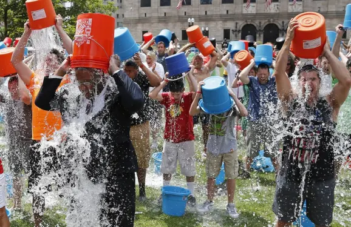

What is Water Wastage and How Does It Occur?
When talking about water waste, this can reference a few key areas. The water waste from a community of people is more commonly known as sewage. Household (or other buildings) wastewater can include the waste from toilets or from actions such as draining kitchen sinks. Simply using too much water can very easily be done by anyone. Running a very long shower, loading your washing machine too regularly or leaving the tap running when brushing your teeth are all examples of how easy it is to waste this valuable resource. In regard to sewage and wastewater from your pipes, damaging chemicals or cleaning products may be drained through your pipes, you may be using your sewage system too often, or it's always possible that large water treatment companies are not managing wastewater services in the best way to protect the environment. What is the Impact of Wastewater on the Environment? When considering the damage wastewater is capable of, the biggest threats to the environment are contamination and pollution. If sewage is not treated appropriately before being disposed of it, it can contaminate water and thereby put wildlife at great risk. Furthermore, wastewater dispersed through flooding or leaks means that completely untreated water can enter water sources and pollute them. The process of treating wastewater also requires fossil fuels. This means that wastewater treatment has the potential to increase carbon footprint and air quality. Global Water Wastage Statistics When considering the situation of water wastage and the earth's future, it's important to take into account daily water use and habits within other countries around the world. With these statistics, you can better understand how your own country (and therefore your own effort) is faring in comparison to other countries. These statistics can show a shocking difference between water use statistics based on different countries. his is an important reminder of how all countries across the world need to work cohesively to lower water wastage and help save the environment. We're all living on the same planet, after all. Belgium is the biggest daily consumer of water on average by individuals, with 7.406 liters. Kenya is the smallest daily consumer, with 50 liters. You might expect that the country to house the biggest water consumption on a daily basis would be the country to have the largest population: but China, which does have the world's largest population, has a smaller daily water consumption than Belgium. It just goes to show how each individual's water usage can make a significant difference. Countries such as Kenya are often struggling with a water crisis, which throws into sharp relief how valuable a commodity like water is. For countries on this list using a high amount of daily water, countries like Kenya, in comparison, are using very little simply because they do not have access to safe water. It's now more important than ever to preserve the water that the world does have.
Industrial Wastewater

Sources of Wastewater
The common sources of wastewater are domestic sewage wastewater and non-domestic wastewater. Here’s a
brief lowdown
Domestic Sewage
The wastewater created from homes, public toilets, hotels, resorts, motels, schools, religious
institutions, hospitals, doctors’ clinics,
sports centers, and apartments can be classified as domestic sewage wastewater. The mentioned
institutions individually and collectively create
significantly high levels of wastewater
Non-Domestic Water
This includes the wastewater created from floods, rainwater runoff, swimming pool water, garage water,
and water from cleaning centers.
Wastewater generated from salons, commercial kitchens, energy units, and agricultural facilities can
also be classified into this category.
So, in a way, the water used in both residential and commercial units will add to the volume of
wastewater produced by the property.
Effects of Wastewater
As you’d probably guess at this stage, the impact of wastewater is devastating, to say the least. It
adversely impacts the environment
and ends up ruining the ecological balance.
Its impact on human health is equally alarming. Here’s a shortlist of the worst effects of wastewater.
Contamination of Habitat and Water
The first and the most pronounced impact of wastewater is the fact that it ends up contaminating and
(eventually) destroying the natural habitats. Over time, the wildlife residing in these habitats are
affected as they are under the exposure of harmful chemicals
borne by the water. So, wastewater doesn’t just destroy habitats, but it also ends up killing the
animals living there.
Facts

Surface Runoff Water
Harvesting
➤Saving water should never become a public concern.
➤A significant amount of freshwater is used for irrigation, yet the efficiency with which water is used
in this sector is lower than 35%.
➤ More than 70% of the freshwater available to us in the form of groundwater and surface water is
contaminated.
➤Thermal and nuclear power plants require huge quantities of fresh water for power generation. But most
of them don’t disclose the amount of water that’s utilized.
➤You’ll be shocked to hear that Kolkata wastes 50% of the water that it receives!
➤Bangalore, which is the third most populous city in the country, comes a close second at 49%. The
wasted water is unaccounted for, which is even worse.
➤Water wastage figures in New Delhi, Chennai and Mumbai stand at 26%, 20%, and 18% respectively
Waste water treatment
Wastewater can be treated in wastewater treatment plants which include physical, chemical and biological
treatment processes. Water that is no longer needed or is no longer suitable for use in bilge water that
can be discharged back into the environment and it is formed by a number of activities including
bathing, washing, using the toilet and rainwater runoff. Wastewater treatment is a process used to
convert wastewater into an effluent outflowing of water to a receiving body of water that can be
returned to the water cycle with minimal impact on the environment or directly reused. The principal
objective of wastewater treatment is generally to allow human and industrial effluents to be disposed of
without danger to human health or unacceptable damage to the natural environment. Wastewater treatment,
also called sewage treatment, the removal of impurities from wastewater,
or sewage, before they reach aquifers or natural bodies of water such as rivers, lakes, estuaries, and
oceans